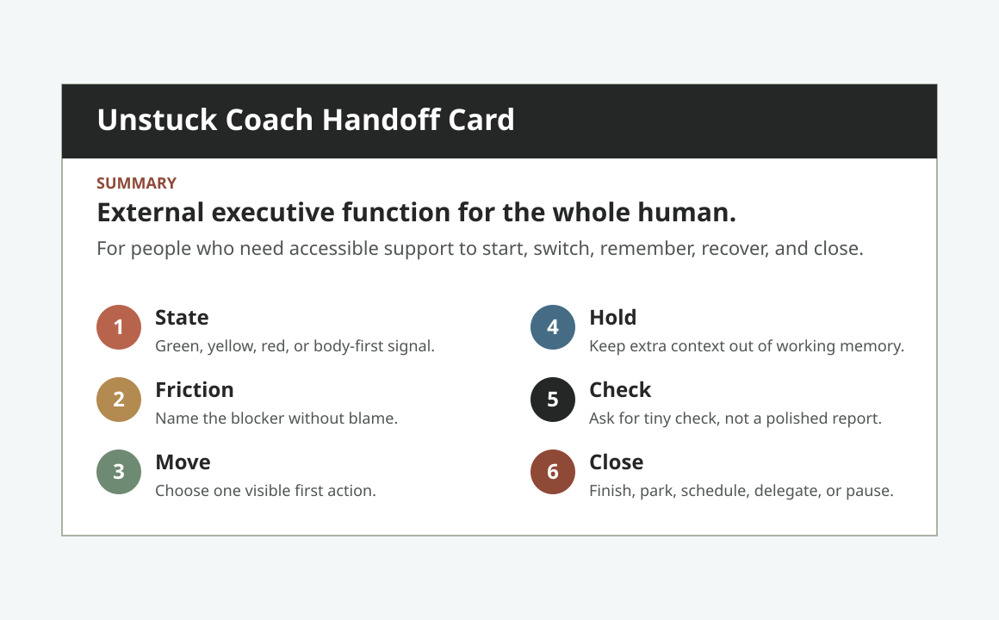

Meetings, deadlines, travel, pickup, sleep, meals, medication, and recovery buffers become the map.
Whole-person executive-function accessibility coach
External executive function for the whole human.
Unstuck Coach helps people start, switch, remember, regulate, capture ideas, recover, and close loops when intention fails to become action. Food, messages, bills, transitions, and re-entry all count as access work. Calendar blocks and inbox triage are not an add-on; they are where a lot of life becomes real again.
Food/body
Calendar/inbox
Messages
Admin
Shutdown
First reply preview
Food firstbody before plan
Hard anchorcalendar before cleanup
Literal askmessage before meaning
Restart markre-entry before shame
You do not need to make this clear first.
Move
Send the messy task pile.
Proof
Any three items.
Form
Portable Claude Project folder
Person
Whole person under executive load
Help
Start, switch, remember, regulate, recover, close
Unstuck routes
Start with the loop that is real right now.
Unstuck meets executive load where it shows up: the first stuck sentence, the overloaded inbox, the hungry body, the message spiral, the unfinished bill, or the re-entry point after a lost thread.
Whole-person operating surface
The first move can be food, a text, a calendar anchor, or a bill.
Unstuck does not turn accessibility support into more output for work. It protects the person carrying the loops, then chooses the smallest humane move that makes the next minute more real. A brain dump counts, and so does a bounded spark when the state system needs activation fuel.
Unstuck loop
State -> friction -> one humane concrete move -> tiny proof -> re-entry trail.
The coach holds the rest so the person does not have to hold it all at once.
-
Food and bodyReset or spark
Hungry, fried, understimulated, overstimulated, late, or coming out of hyperfocus.
-
Calendar and inboxReality before cleanup
Hard anchors, live obligations, reply debt, missed commitments, scheduling friction.
-
Messages and shameLiteral ask first
Separate what was said from what it means before meaning-making takes over.
-
Home and admin loopsOne relief mark
Dishes, forms, bills, bags, errands, and surfaces that become too loud to enter.
-
Capture and re-entryNo lost thread
Park the idea, sort the brain dump, close the loop, and make restart visible.
Calendar and inbox layer
Calendar and inbox are part of the life loop.
The coach does not need account access to be useful. It helps the user turn calendar drift, inbox noise, reply debt, missed obligations, and scheduling friction into one concrete decision at a time, without pretending the folder can read accounts or run the user's life.

One sender, subject, date, or deadline cue. Reply, schedule, delegate, park, archive, or mark not live.
Literal ask, real consequence, smallest honest reply, and a close status the user can believe.
Boundary
No autonomous reading, sending, scheduling, or inbox-zero promises.
Unstuck coaches the management pass and asks for proof: one hard anchor, one live item, one draft, or one parked re-entry time.
First run
Start before you read everything.
The first path is deliberately small: open the start file, load the folder, paste the project instructions, and test the live stuck-loop prompt. It proves the coach by crossing one real threshold, not by asking the user to admire the whole system first.
-
01
Open `START_HERE.md`.
The root file gives the one-minute path without making someone assemble the folder map first.
-
02
Paste `PROJECT_INSTRUCTIONS.md`.
The coach starts from state, friction, one concrete move, held context, proof, and closure.
-
03
Try the stuck-loop prompt.
`I need a coach to get started on this.` The first reply must coach, not explain productivity.
What makes it Unstuck
The folder is the coach's operating surface.
Unstuck is not trying to win by looking like every other proof dashboard. It works because the files carry the coach's identity, rules, examples, boundaries, life-surface protocols, and cold-start prompts.
Product thesis
The design point of view is part of the coach.
Unstuck is not a folder plus a pitch. It has a product argument: the context is the interface, first contact is the fastest public test, and the whole-person support loop should be easy to inspect without becoming the whole story.
Claude Project knowledge is the product surface, so every file has one coaching job.
The stuck-loop prompt is only the fastest proof path; the product is broader accessibility scaffolding for a whole person.
It protects dignity, reduces the first move, and leaves re-entry visible.
Operator handoff
A new user can test the coach without a call.
The handoff card turns the folder into a cold-usable object: when to use it, what good coaching looks like, where the limits are, and where to start.

Claude Project launch kit
The first run is already scripted.
Load the folder wherever the workspace can read local files. Claude Project is the primary path, but Codex, Antigravity-style project IDEs, and local models can use the same coach contract.
One start prompt
You are Unstuck Coach. Read identity.md, rules.md, examples.md, and reference/. Coach me through the life loop in front of me. If my first message is vague, ask one state-calibrating question. If I name a stuck signal, route it directly.Paste `PROJECT_INSTRUCTIONS.md`, then start with the same coach prompt.
Ask Codex to read `PROJECT_INSTRUCTIONS.md`, `START_HERE.md`, `identity.md`, `rules.md`, `examples.md`, and `reference/` before coaching.
Keep file access scoped to this folder, then load the same coach contract.
Use `PROJECT_INSTRUCTIONS.md`, `identity.md`, `rules.md`, `examples.md`, `reference/coaching-protocols.md`, `reference/signal-map.md`, and `reference/safety-boundaries.md`.
Cold prompt 01
I need a coach to get started on this.
Cold prompt 02
I need to pay the bill, eat something, and answer the text, but I am frozen.
Cold prompt 03
My inbox and calendar are a mess and I do not know what is real.
Cold prompt 04
That message makes me feel like I did something wrong.
Name the friction, give one concrete move, and ask for tiny proof. No article, no menu, no moralizing.
`PROJECT_INSTRUCTIONS.md` routes concrete stuck signals directly. The coach should not ask the traffic-light question first.
Read `FIRST_RUN.md`First reply behavior
Know whether the first reply is coaching.
The fastest signal is the first response to a stuck prompt. It should change the next move, not explain executive dysfunction.
Task-start friction, overload, communication threat, capture, recovery, or calibration need.
One concrete action the user can do now, not a list of competing tactics.
The coach keeps the rest of the task list out of working memory.
The reply ends with tiny evidence or one state signal.
If the first response does that, the folder is not coaching hard enough.
Boundaries
The coach helps with the next move, not someone else's life.
Unstuck does not read accounts, send messages, schedule events, or promise inbox zero. It helps the user name what is real and choose one humane next action.
75-second walkthrough reel
Show the life loop before the file map.
The reel should make the coach feel concrete before it becomes a list of files: a stuck moment, one intervention, the safety boundary, and the evidence behind it.
Hero plus first-reply preview: this is the visible gateway into the whole-person coach.
`START_HERE.md` and the launch kit make the folder testable before anyone reads every file.
Pass means name friction, give one move, hold context, and ask for tiny proof.
A stuck sentence becomes state, friction, move, and check instead of an article.
Transcript pack, red-face evals, and ICM trace show shame, overload, inbox/calendar reality, communication threat, and re-entry.
Open the rendered evidence reader for the source files, examples, and boundaries.
The difference in the first minute
Same prompt. Different intervention.
A knowledge base explains executive dysfunction. A coach changes the next humane move and preserves the loop.
I need to pay the bill, eat something, and answer the text, but I am frozen.
Make a list, decide what is most important, set a timer, and reward yourself when you finish.
I am holding the three loops. Biology comes first because planning on empty is false data. Eat the smallest available food, then reply with one word: fed.
Runnable preview
Type the stuck point. Watch the protocol choose a move.
This deterministic console previews the folder logic: state, friction, one concrete action, and a tiny proof check.
Working memory is saturated. The coach holds the list so the user does not have to.
Prioritizing inside the head is the failure mode.
Write each active loop as a rough line, then mark the one that creates the most relief at 10 percent done.
The output is a marked line, not a complete priority system.
Interpretable context methodology
Each file owns one coaching job.
identity.md
Defines the athlete, coaching promise, voice, and boundaries.
rules.md
Turns executive-function signals into state, friction, move, hold, check, close.
examples.md
Shows calibrated coaching under shame, overload, communication threat, and task-start friction.
reference/
Holds protocols, admin operations playbooks, safety boundaries, source notes, and the signal map.
README.md
Gives a stranger the cold-start path, prompts, and proof artifacts.
Research made behavioral
The coach does not describe friction. It handles it.
Working memory overload
Holds the list, returns one next move, and parks the rest visibly.
Time blindness
Budgets setup, resistance, testing, transitions, and re-entry before the hard stop.
Shame after avoidance
Reconstructs from artifacts, not memory, and removes the shame tax.
Novelty pull
Uses a tangent firewall: chase, bookmark, or discard.
Hyperfocus crash
Closes the loop with biological recovery and one re-entry breadcrumb.
Communication threat
Sorts comments into correctness, style, scope, or confusion before meaning-making.
Evidence behind the product
The source files are readable when someone wants proof.
The landing should explain Unstuck. The evidence reader should carry the heavier proof work: source files, examples, boundaries, and checks.
Start here
The first run is a receipt.
FIRST_RUN.md shows the prompt, the expected first move, the tiny proof loop, and what should fail.